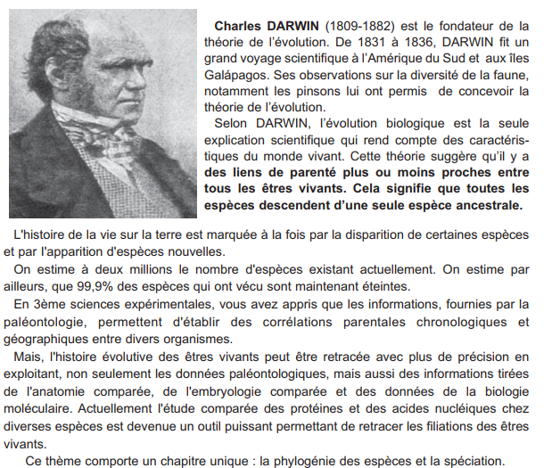
La théorie de l'évolution, fondée par Charles Darwin au XIXᵉ siècle, stipule que toutes les espèces actuelles et fossiles descendent d'un ancêtre commun et se sont transformées au cours du temps. Ce thème explore les preuves de l'évolution (phylogénie), les mécanismes qui la sous-tendent (mutations, sélection naturelle) et le processus de spéciation (apparition de nouvelles espèces).
L'anatomie comparée étudie les organes homologues : des organes qui ont la même organisation fondamentale malgré des adaptations différentes liées au mode de vie. Exemple : le membre antérieur des vertébrés tétrapodes (homme, cheval, oiseau, chauve-souris) présente le même plan d'organisation (humérus, radius, cubitus, carpes, métacarpes, phalanges).
L'appareil circulatoire montre une complexification croissante des poissons (1 oreillette + 1 ventricule) aux mammifères (2 oreillettes + 2 ventricules), suggérant une filiation évolutive.
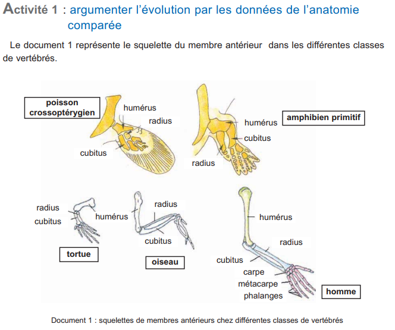
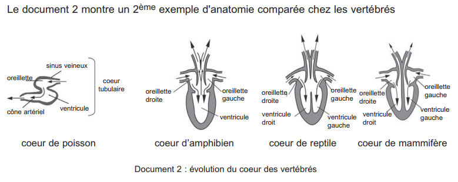
Les embryons de tous les vertébrés présentent des ressemblances frappantes aux premiers stades de développement. Notamment, tous possèdent des fentes branchiales à un stade précoce. Celles-ci persistent et deviennent fonctionnelles chez les poissons (branchies), mais régressent chez les vertébrés terrestres (reptiles, oiseaux, mammifères).
Cette similitude suggère une origine commune à tous les vertébrés, probablement aquatique. Le groupe le plus primitif est celui dont l'embryon présente le moins de transformations par rapport à l'adulte.
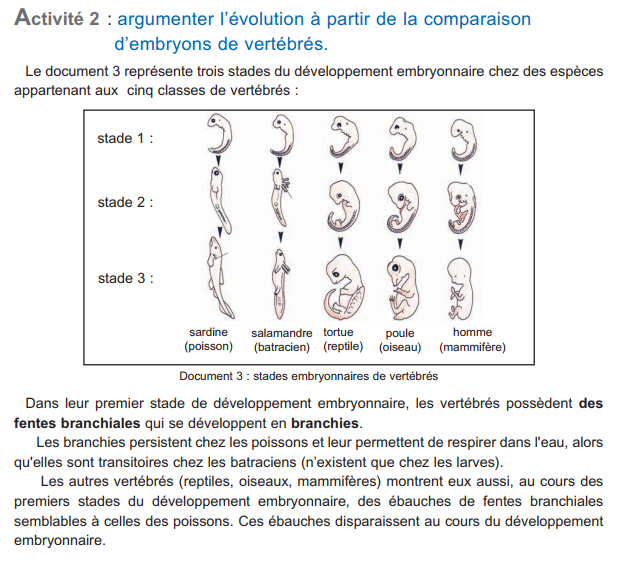
La comparaison des séquences d'acides aminés de protéines homologues (myoglobine, cytochrome C, hémoglobine…) chez différentes espèces permet d'établir des liens de parenté.
Principe : plus le nombre de différences en acides aminés entre deux espèces est élevé, plus leur ancêtre commun est éloigné dans le temps, et inversement. Les mutations s'accumulent à un rythme relativement constant (horloge moléculaire).
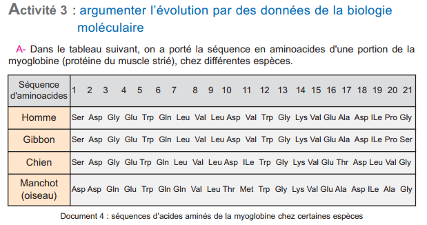
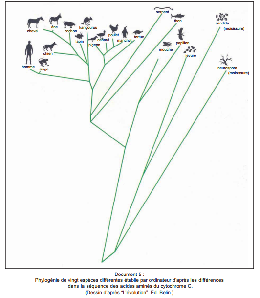
| Espèces comparées | Différences (myoglobine) |
|---|---|
| Homme — Gibbon | 2 (très proches) |
| Homme — Chien | 10 |
| Homme — Manchot | 16 (très éloignés) |
Les mutations géniques (ou ponctuelles) sont des modifications de la séquence de l'ADN : substitution (remplacement d'un nucléotide), addition ou délétion. Elles créent de nouveaux allèles et sont à l'origine de la diversité génétique.
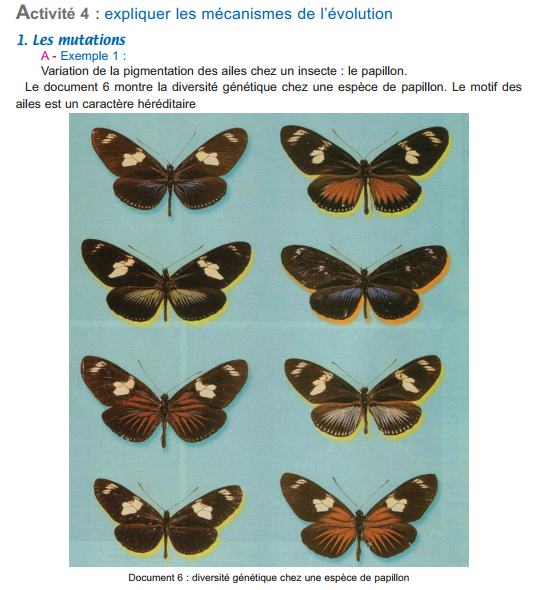
Les études paléontologiques montrent une transformation progressive du membre des équidés : réduction du nombre de doigts (de 5 à 1), allongement des os, adaptation à la course en milieu ouvert. Cette évolution résulte de mutations cumulées orientées par la sélection naturelle sur environ 60 millions d'années.
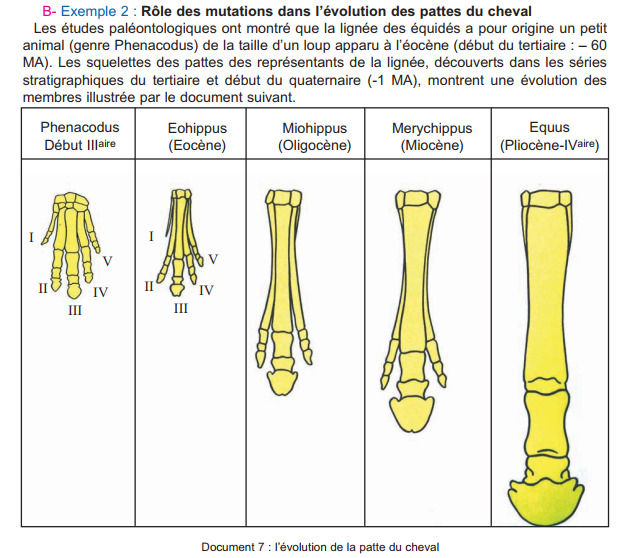
Les gènes codant pour les différentes chaînes de globine (α, β, γ, δ…) dérivent tous d'un gène ancestral unique par duplications successives suivies de mutations indépendantes. L'amplification génique augmente la taille du génome et crée de nouveaux gènes.
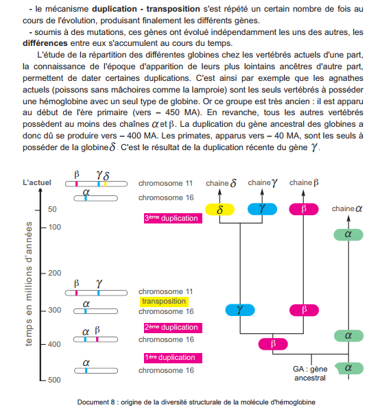
Les mutations chromosomiques modifient le nombre ou la structure des chromosomes. Exemples :
Caryotypes de drosophiles : des fusions de chromosomes ont créé de nouvelles espèces à partir de Drosophila virilis. La comparaison des caryotypes montre des remaniements qui isolent reproductivement les porteurs.
Polyploïdie chez le blé : Triticum monococcum (2n=14) → T. durum (4n=28) → T. aestivum (6n=42). La polyploïdie résulte de la fécondation de gamètes non réduits (diploïdes).
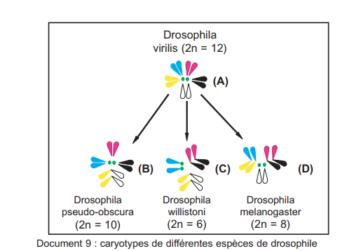
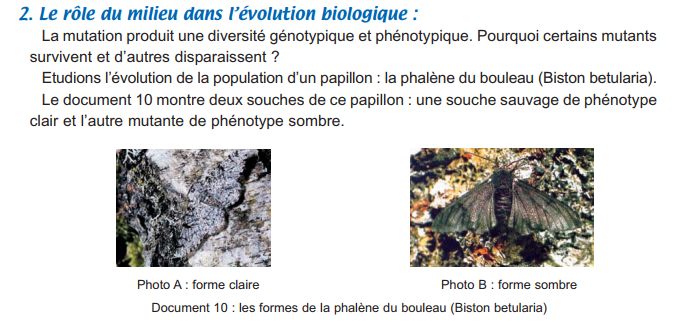
La sélection naturelle est un processus orienté (≠ mutations aléatoires) qui favorise la survie et la reproduction des individus dont le phénotype est le mieux adapté aux conditions du milieu.
Exemple — La phalène du bouleau : Avant la révolution industrielle, la forme claire dominait (camouflage sur troncs recouverts de lichens clairs). Avec l'industrialisation (Manchester, 19ᵉ siècle), les troncs noircissent (pollution). La forme sombre (carbonaria) devient majoritaire (≤ 90% des populations) car mieux camouflée face aux oiseaux prédateurs. Après les lois anti-pollution, la forme claire redevient fréquente.
La spéciation est l'ensemble des processus qui aboutissent à l'apparition de nouvelles espèces à partir d'une espèce originelle. L'exemple emblématique est celui des pinsons des Galápagos étudiés par Darwin.
1. Migration et isolement géographique : Une forme ancestrale de pinsons venue d'Amérique du Sud colonise les îles centrales de l'archipel. 2. Migration vers les îles périphériques : les populations se retrouvent isolées géographiquement les unes des autres. 3. Divergence génétique : chaque population accumule des mutations indépendantes, adaptées à son milieu (type de nourriture → forme du bec). 4. Isolement reproductif : les différences génétiques deviennent telles que les individus des différentes populations ne peuvent plus se croiser (ou donnent une descendance stérile).
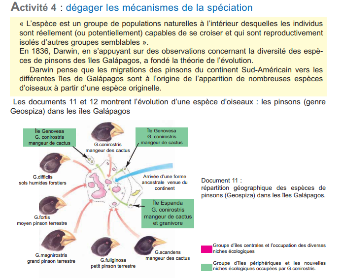
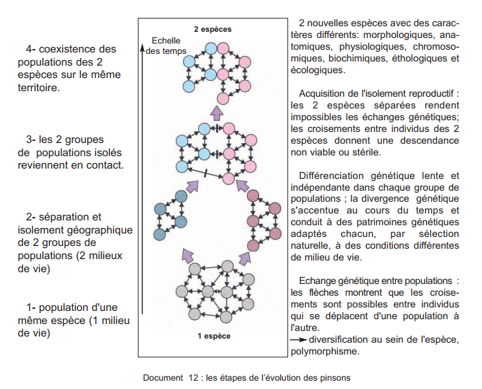
Populations séparées par une barrière physique (mer, montagne, rivière).
Partenaire potentiel non rencontré → niches écologiques différentes.
Périodes de reproduction différentes.
Incompatibilité génétique → pas de brassage possible.
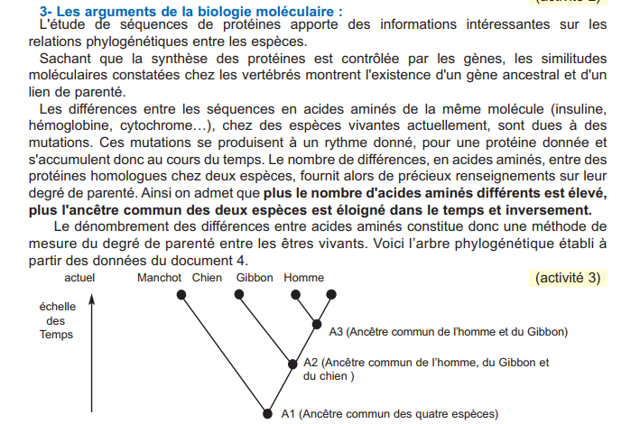
Q1-Q5 : Phylogénie · Q6-Q10 : Mécanismes · Q11-Q15 : Spéciation & Synthèse